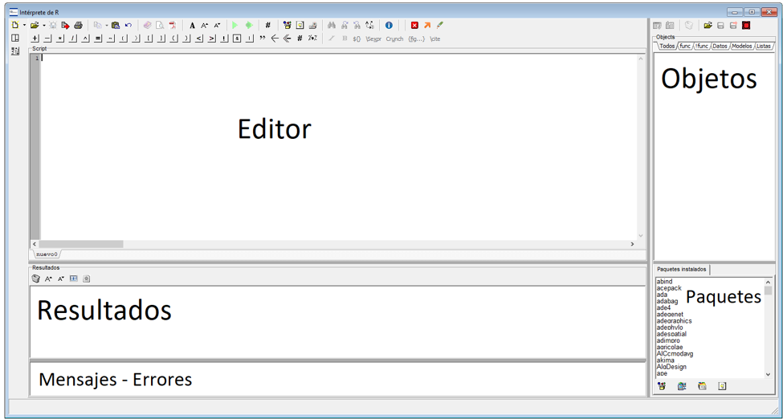
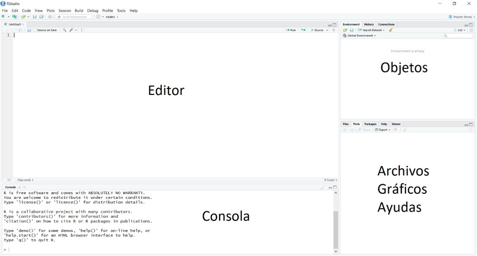

Introducción a R
Herramientas de software
R (R. C. Team 2019) es un lenguaje de programación orientado a objetos (Ihaka y Gentleman 1996). Es un software libre y de código abierto, lo que significa que puede ser usado, compartido y modificado libremente. Cualquier persona puede participar en el desarrollo de nuevas funciones y disponibilizarlas para la comunidad de los usuarios de R en forma de paquetes (packages), por lo que R se transformó en uno de los lenguajes de programación más utilizados en Estadística. Presenta potentes capacidades para el procesamiento y visualización, no solo de datos espaciales, sino también de otros tipos de dato. R puede ser instalado en plataformas Windows, Mac OS y en sistemas basados en Linux. Existen múltiples entornos de desarrollo integrado (Integrated Development Environment IDE) los cuales facilitan la programación. Ejemplos de este tipo de software es el intérprete de R que contiene InfoStat (Di Rienzo et al. 2019) y RStudio (Rs. Team 2019). Para poder utilizar el intérprete de R en InfoStat es necesario tener instalados ambos programas. El instalador de InfoStat está disponible en http://infostat.com.ar/, mientras que R puede descargarse en https://cran.r-project.org/. El instalador de RStudio puede descargarse desde la página https://rstudio.com/products/rstudio/download/#download.
Introducción al manejo de datos espaciales con R
Numerosos paquetes para el manejo de datos espaciales se encuentran en repositorios digitales de R, ejemplos de ellos son geoR, gstat, rgdal, spdep, sf, stars, terra y raster. En los últimos años se han desarrollado paquetes especializados como ggplot2, leaflet y tmap que incrementaron considerablemente las capacidades para elaboración de gráficos y mapas, tanto estáticos como interactivos. La sintaxis de estos paquetes usa distintos niveles de información, i.e. individualmente se especifica cada nivel del gráfico y luego éstos se combinan para obtener el gráfico completo. Ejemplos de estos niveles son los datos, la estética, los objetos geométricos, las escalas, las particiones, entre otros. Es posible el análisis de datos espaciales utilizando R, sin necesidad de usar un software GIS.
Intérprete de R en InfoStat
La interfaz del intérprete de R en InfoStat se divide en cinco paneles. El panel superior izquierdo permite al usuario visualizar scripts previamente escritos o escribir nuevos. En el panel Resultados se muestran las salidas y resultados en forma de texto, los resultados gráficos se mostrarán en una nueva ventana. Debajo de este panel, se muestran información ya sea detección de un error durante la ejecución de un comando, como la correcta finalización de ciertos procedimientos. En los paneles derechos se muestran los objetos cargados en el ambiente de trabajo, mientras que en el panel inferior derecho se muestran los paquetes instalados y en rojo los paquetes cargados.
RStudio
La interfaz de RStudio se divide en cuatro paneles, a su vez, cada panel puede contener más de una pestaña. El panel superior izquierdo permite al usuario cargar scripts previamente escritos o escribir nuevos. En el panel consola se muestran las sentencias de código ejecutadas y los resultados. En los paneles derechos se muestran los objetos cargados en el ambiente de trabajo, mientras que en el panel inferior derecho se muestran archivos en el directorio de trabajo, gráficos generados, ayudas.
